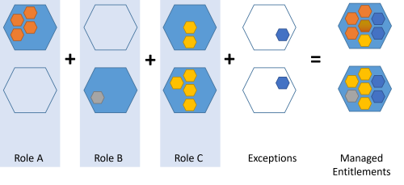
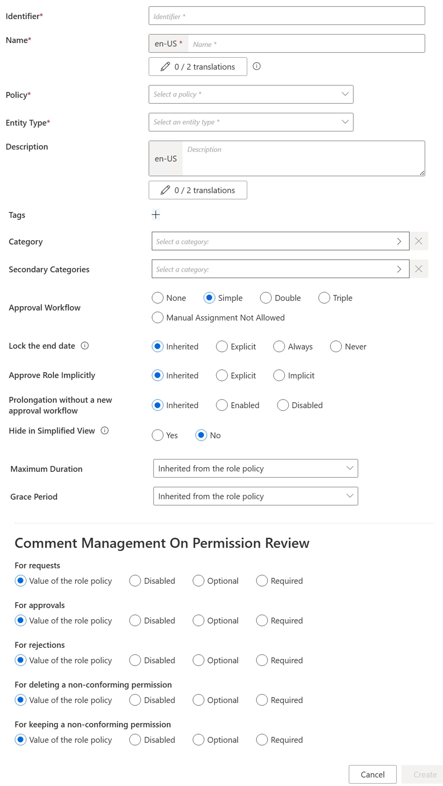
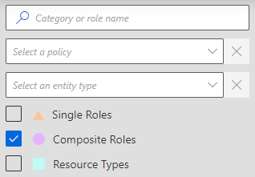

Create a Composite Role
How to define composite roles in order to create sets of single roles easy to assign. See the Composite Role and Create Roles in the Role Catalog topics for additional information.
Overview
A composite role is a set of single roles that are usually assigned together, because they revolve around the same application, or the same job, etc. Composite roles are aggregates of single roles, they can help organize the role catalog. See the Composite Role topic for additional information.

A composite role is a business role comprehensible by managers. It provides an additional layer of abstraction above existing entitlements and single roles. We can say that if a single role allows a user to perform a task, a composite role allows them to perform a job.
Composite roles and Role Mining
Composite roles can also be created based on the rules provided by Role Mining. Rules link roles to dimensions. See the Perform Role Mining topic for additional information.
The following example shows single roles from A to F. Role Mining suggested the rules on the schema, linking these single roles to the organizations R&D and Project as well as to the functions developer, writer, contractor and project manager. The idea is to use these rules to create composite roles. Here, we clearly have one role for R&D-developer, one for R&D-writer, Project-contractor and Project-project manager. Thus, it is clear here that composite roles add an abstraction layer.
Single role rules link composite roles to single roles: a single role rule states that specific single roles are assigned according to specific criteria, particularly composite roles. See the Single Role Rule and Create Roles in the Role Catalog topics for additional information. Thus, a composite role assignment can imply specific single role assignments.
Participants and Artifacts
For a given managed system, integrators may need the help of the application owners who know the application's users, entitlements and data model.
|
Input |
Output |
|---|---|
|
Role catalog (required) |
Composite roles |
See the Create Roles in the Role Catalog topic for additional information.
Create a Composite Role
Create a composite role by proceeding as follows:
Step 1 – On the home page in the Configuration section, click on Access Roles to access the roles page.

Step 2 – On the roles page, click on the adequate category and create a role by clicking on + New at the top right corner.
Step 3 – Fill in the fields.

- Identifier: must be unique among roles and without any whitespace.
- Name: will be displayed in the UI to identify the single role.
- Policy: policy in which the role exists.
- Entity Type: entity type targeted by the role.
- Category: category assigned to the role.
- Secondary Categories: other potential categories assigned to the role.
- Approval Workflow: represents the number of validations required to assign the role.
-
Lock the end date: locks manual permission at the end date. Has four options:
-
Inherited: the policy's setting will be used.
-
Explicit: at the time of assignment, the end date can be specified manually or can be locked to the applicable context rule.
-
Never: the end date will never be locked and needs to be specified manually.
-
Always: the end date is always locked according to the applicable context rule.
-
- Approve Role Implicitly: needs at least a simple approval workflow. Implicit mode bypasses the approval step(s) if the person who issues the role request is also the role officer. Explicit refuses said bypass. Inherited follows the policy decision to approve roles implicitly or not.
- Hide in Simplified View: hides the role from the users' Simplified View in View Permissions dialog. This setting does not apply to roles which are either inferred or have workflow states which require manual action.
- Comment Management on Permission Review: to change if different from the role policy.
- Maximum Duration: duration (in minutes) after which the role will be automatically revoked, if no earlier end date is specified. It impacts only the roles which are manually assigned after the maximum duration is set. Pre-assigned roles are not impacted. If no duration is set on the role, the MaxDuration of the associated policy is applied. If the MaxDuration is set to 0 on the role, it prevents the associated policy from applying its MaxDuration to it.
Step 4 – Click on Create and see a line added on the roles page.
Step 5 – Create at least one single role rule with the composite role as a criterion.
Impact of Modifications
When deleting a composite role, caution must be used when deleting the corresponding single role rules. Indeed, these rules thus lose their criteria and may be applied to far too many people after that.
Simulations are available in order to anticipate the changes induced by a creation/modification/deletion in roles and single role rules. See the Perform a Simulation topic for additional information.
Verify Composite Role Creation
In order to verify the process, check that the role and rule are created with the right parameters.
For roles, click on Access Roles on the home page in the Configuration section.
Select composite roles and find the role you created inside the right category and with the right parameters.

For rules, follow the instructions about assignment rules. See the Automate Role Assignments